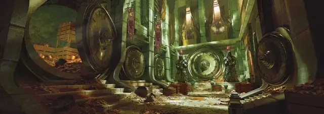

Наследник дома Кундарак
House Kundarak Heir

Характеристики Сила, Телосложение, Интеллект
Черта Метка охранения
Навыки Расследование, Тайная магия
Инструменты Воровские инструменты
Снаряжение Выберите А или Б: (А) Воровские инструменты, Отличная одежда, 10 ЗМ; или (Б) 50 ЗМ
Как наследник дома Кундарак, вы глубоко гордитесь своей семьёй и её деятельностью по защите ценностей Кхорвайра. Ваш дом всегда был одним из лидеров кланов Мрорских Держав. Хотя он никогда не был королевским домом, за ним закрепилась репутация профессионализма, чести и порядка. Вы можете стремиться поддерживать эту репутацию, ставить собственное понимание чести выше семейного или вовсе восстать против ожиданий дома и отвергнуть требования чести.